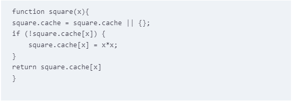

Week 7
Notes
Talking abuout this week reading I can say that the topic that most captured my attention was using cache. We were using a lot local storage but for one reason I thought that local storage it was in a way that cache, I can see is not and that makes me start thinking a lot about how can I apply using it while coding. I really liked the example they gave us in the book:
Questions
Now that I talked about cache, what is the difference between cache and local storage? I have plan to llok about this but I want to know from you that have a better understanding about these things to tell me a little more, thanks!